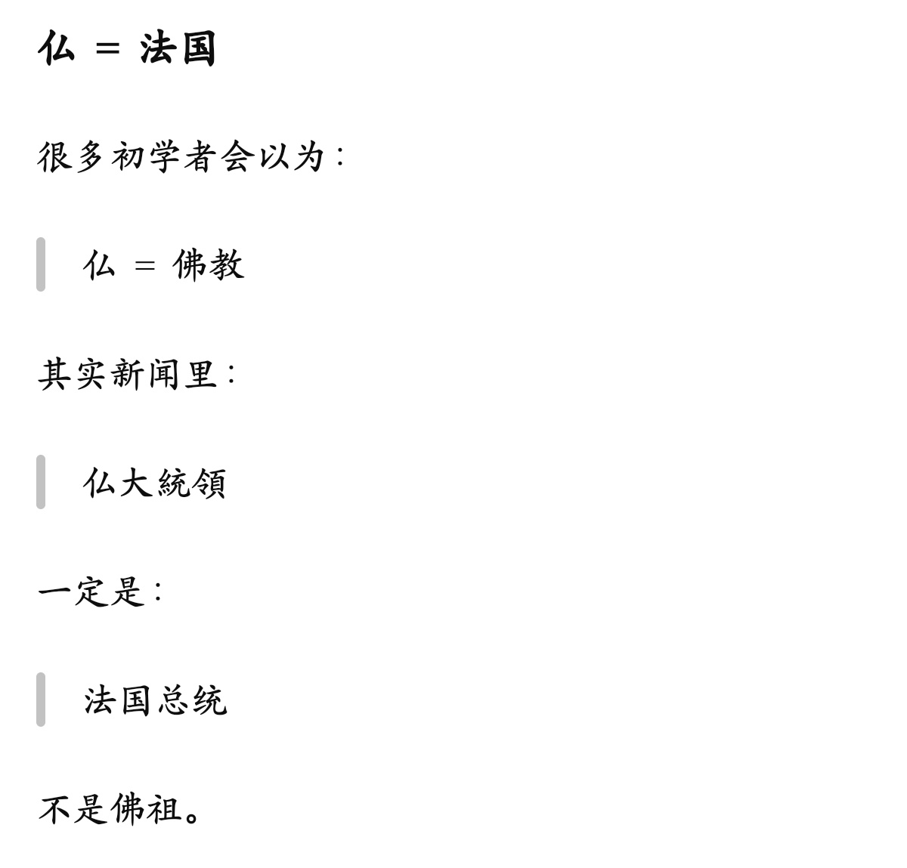

大狐帝国史官邹智萱（笔名段歌文）
@Rococo90933671
美国＝米
俄罗斯=露
澳大利亚=豪
法国=仏
有趣，这样的例子还有不少：
英国＝英
德国＝独
意大利＝伊
荷兰＝兰
中国＝中
韩国＝韩
朝鲜＝朝
印度＝印
泰国＝泰
西班牙＝西
加拿大＝加
巴西＝伯
菲律宾＝比
土耳其＝土
瑞士＝瑞
奥地利＝墺
印尼＝尼
越南＝越
墨西哥＝墨
波兰＝波
匈牙利＝洪
希腊＝希
埃及＝埃
智利＝智
葡萄牙＝葡
丹麦＝丁
叙利亚＝叙
新加坡＝星
新西兰＝新
蒙古＝蒙
乌克兰＝宇（或烏）
秘鲁＝秘
